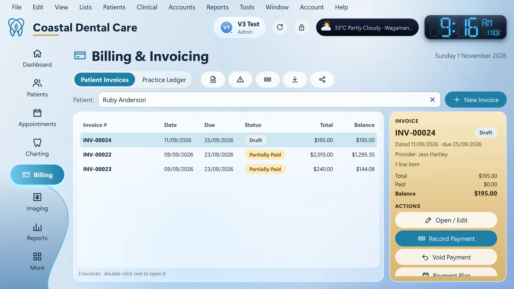
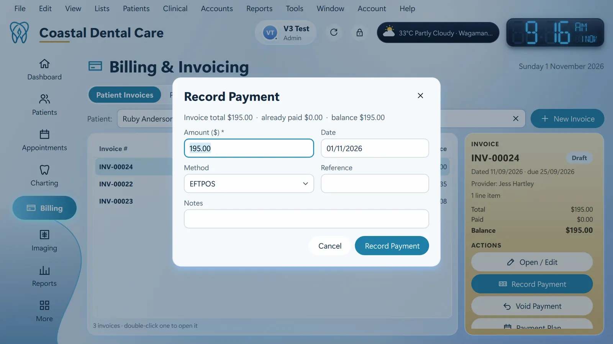
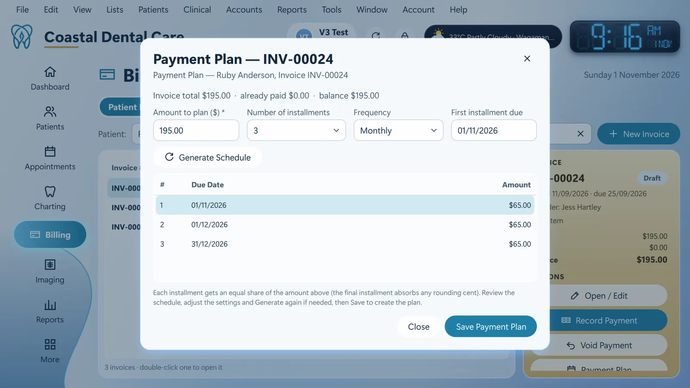
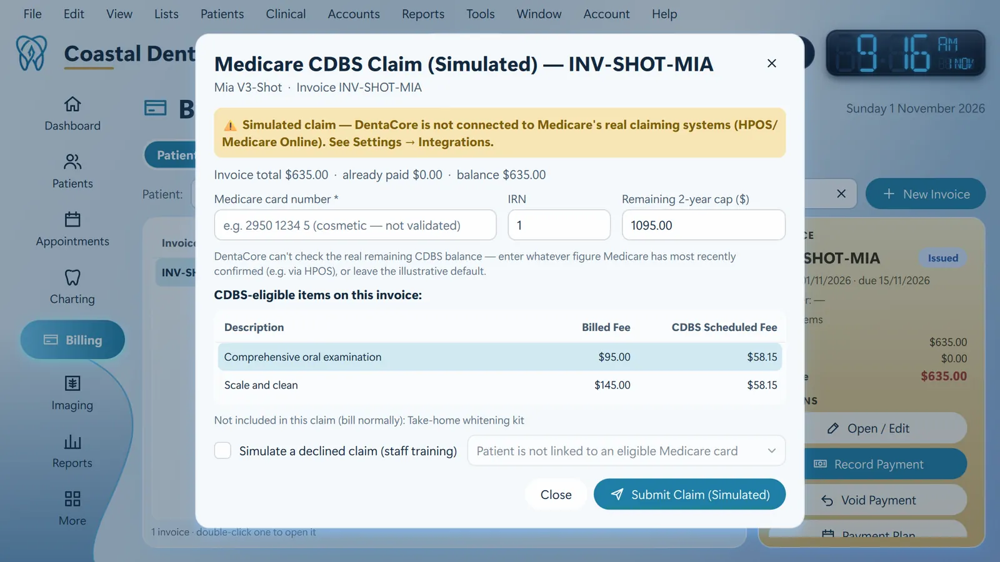
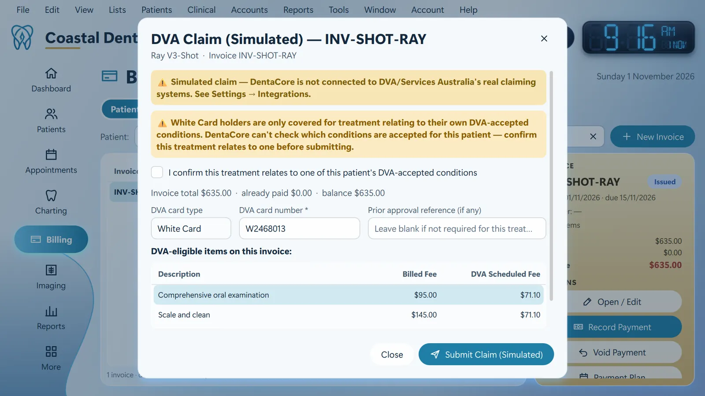
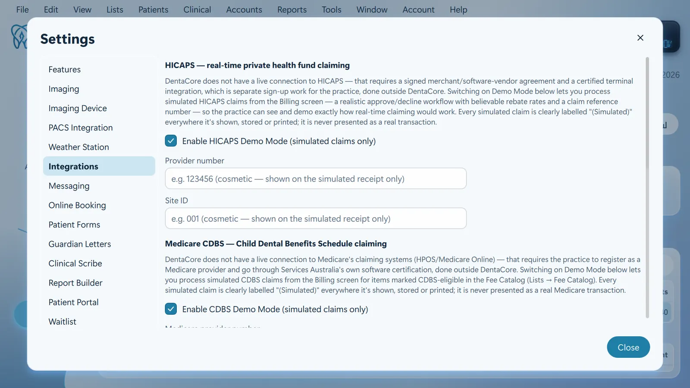
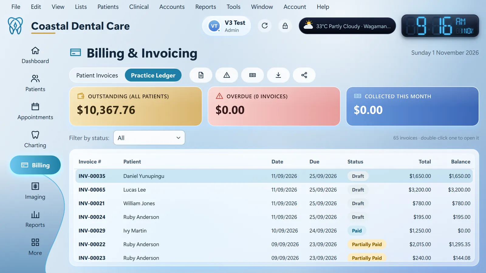
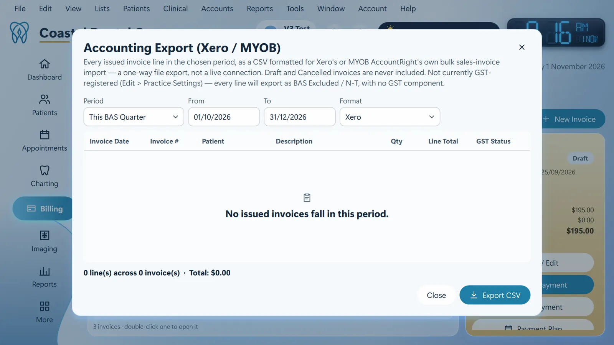
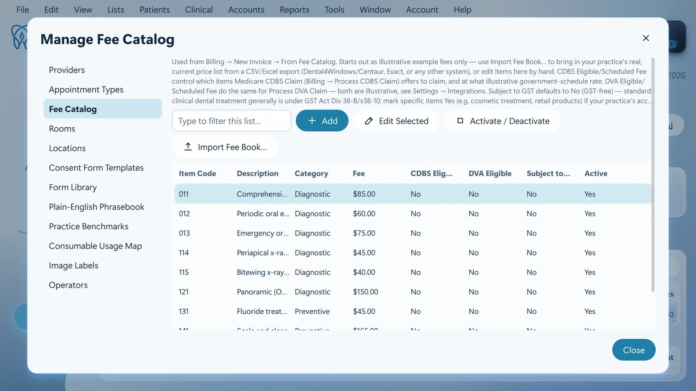

01 / 10 · Billing & claims
Invoices
Billing & Invoicing → New Invoice
Raise an invoice in a few clicks from what was actually planned.
- Add lines from the treatment plan, from the fee catalog with tooth and quantity, or as a one-off custom line.
- Save as Draft to finish later, or Save & Issue.
- GST added only to lines marked Subject to GST, with the practice's ABN on a Tax Invoice once you're registered.
- Print or email any invoice as a PDF.
- A gold card beside the list shows the selected invoice's totals, payments and every action.

02 / 10 · Billing & claims
Payments, receipts and voids
Invoice → Record Payment
Record a payment against an invoice and the balance updates straight away.
- Cash, EFTPOS and other methods, with a reference.
- Receipts List shows every payment ever taken, for reprinting a receipt.
- Void Payment never deletes anything. The payment stays visible with who voided it, when and why, and stops counting towards the total.
- Only an Admin can void, the same separation of duties as a manager signing off a refund.

03 / 10 · Billing & claims
Payment plans
Invoice → Payment Plan
Split a balance into instalments with a schedule DentaCore works out for you.
- Choose the number of payments, weekly, fortnightly or monthly, and the start date.
- Print a payment plan agreement for the patient to sign.
- Record each instalment as it's paid. The invoice balance always reflects what's really been paid.
- The plan completes itself when the last instalment is paid.

04 / 10 · Billing & claims
HICAPS health fund claims
Invoice → Process HICAPS Claim
Claim from a patient's private health fund from the invoice.
- Pick the fund and enter the membership number.
- DentaCore suggests each line's item category; correct any that look wrong.
- See the status, reference and each line's benefit, then record the gap payment.
- Print a claim receipt.
- Training mode lets staff rehearse claiming, including a declined claim, and is always labelled as such.

05 / 10 · Billing & claims
Medicare Child Dental Benefits Schedule
Invoice → Process CDBS Claim
Claim a child's CDBS entitlement for the lines marked CDBS-eligible in the fee catalog.
- Checks the patient's age on the invoice date.
- Tracks the child's running total against the two-year cap, so you know what's left before booking more work.
- Medicare card number and IRN.
- Lists any lines that weren't claimed and why.

06 / 10 · Billing & claims
DVA claims
Invoice → Process DVA Claim
Claim for veterans holding a Gold or White Card, for lines marked DVA-eligible.
- Gold, White and Orange cards handled correctly.
- A White Card claim asks staff to confirm the treatment is for an accepted condition.
- Card number and prior approval reference.
- A warning that a gap can't be charged, and a gap form only when there is one.

07 / 10 · Billing & claims
Live claiming through Tyro Health
Settings → Integrations
HICAPS, every other health fund, Medicare and DVA can all be claimed for real through one Tyro Health connection.
- Live claiming is switched on once the practice's Tyro Health connection is set up and certified.
- Until then claims run in training mode, clearly labelled everywhere they appear.
- Test Connection shows exactly where the connection stands before a real claim is tried.

08 / 10 · Billing & claims
Practice ledger, day sheet and aged debtors
Billing → Practice Ledger
See the whole practice's money, not just one patient's.
- Outstanding, overdue and collected this month.
- Filter every invoice by status. Aged Debtors opens on the overdue accounts.
- The Day Sheet summarises the day's appointments, invoices and payments for reconciling the till.
- Export the ledger to CSV.

09 / 10 · Billing & claims
GST and accounting export
Reports → Accounting Export
Hand your bookkeeper a file that imports straight into Xero or MYOB AccountRight.
- Choose This BAS Quarter or Last BAS Quarter (July–September, October–December, January–March, April–June), a month, a financial year or your own dates.
- Preview each line with its GST status before exporting.
- Draft and cancelled invoices are never included.
- A one-way file, so your accountant stays in control of what goes into the books.

10 / 10 · Billing & claims
Fee catalog and fee import
Lists → Fee Catalog
Every billable item and its fee, used by invoices and treatment plans.
- Each item can be marked CDBS-eligible and DVA-eligible with its scheduled fee, and Subject to GST.
- Import your existing fee book from a CSV or Excel export of your old system or a spreadsheet.
- DentaCore guesses which column is which, then shows a colour-coded preview of new items, fee changes and skipped rows before anything is written.
- The whole import is one audit entry.
